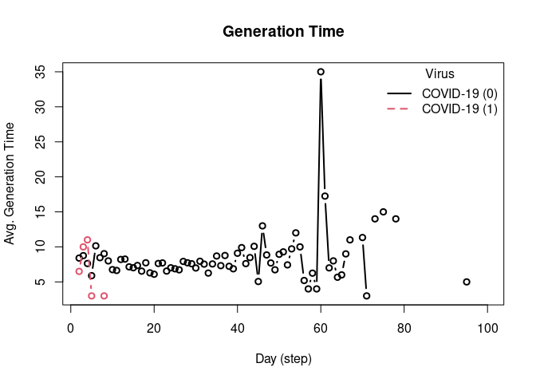

This R package is a wrapper of the C++ library epiworld. It provides a general framework for modeling disease transmission using agent-based models. Some of the main features include:
- Fast simulation with an average of 30 million agents/day per second.
- One model can include multiple diseases.
- Policies (tools) can be multiple and user-defined.
- Transmission can be a function of agents’ features.
- Out-of-the-box parallelization for multiple simulations.
From the package’s description:
A flexible framework for Agent-Based Models (ABM), the epiworldR package provides methods for prototyping disease outbreaks and transmission models using a C++ backend, making it very fast. It supports multiple epidemiological models, including the Susceptible-Infected-Susceptible (SIS), Susceptible-Infected-Removed (SIR), Susceptible-Exposed-Infected-Removed (SEIR), and others, involving arbitrary mitigation policies and multiple-disease models. Users can specify infectiousness/susceptibility rates as a function of agents’ features, providing great complexity for the model dynamics. Furthermore, epiworldR is ideal for simulation studies featuring large populations.
Installation
You can install the development version of epiworldR from GitHub with:
devtools::install_github("UofUEpiBio/epiworldR")Or from CRAN
install.packages("epiworldR")Examples
This R package includes several popular epidemiological models including SIS, SIR, and SEIR using either a fully connected graph (similar to a compartmental model) or a user-defined network. Here are some examples:
SIR model using a random graph
This Susceptible-Infected-Recovered model features a population of 100,000 agents simulated in a small-world network. Each agent is connected to ten other agents. One percent of the population has the virus, with a 70% chance of transmission. Infected individuals recover at a 0.3 rate:
library(epiworldR)
# Creating a SIR model
sir <- ModelSIR(
name = "COVID-19",
prevalence = .01,
transmission_rate = .7,
recovery = .3
) |>
# Adding a Small world population
agents_smallworld(n = 100000, k = 10, d = FALSE, p = .01) |>
# Running the model for 50 days
run(ndays = 50, seed = 1912)
#> _________________________________________________________________________
#> |Running the model...
#> |||||||||||||||||||||||||||||||||||||||||||||||||||||||||||||||||||||||| done.
#> | done.
sir
#> ________________________________________________________________________________
#> Susceptible-Infected-Recovered (SIR)
#> It features 100000 agents, 1 virus(es), and 0 tool(s).
#> The model has 3 states.
#> The final distribution is: 822 Susceptible, 415 Infected, and 98763 Recovered.Visualizing the outputs
summary(sir)
#> ________________________________________________________________________________
#> ________________________________________________________________________________
#> SIMULATION STUDY
#>
#> Name of the model : Susceptible-Infected-Recovered (SIR)
#> Population size : 100000
#> Agents' data : (none)
#> Number of entities : 0
#> Days (duration) : 50 (of 50)
#> Number of viruses : 1
#> Last run elapsed t : 141.00ms
#> Last run speed : 35.22 million agents x day / second
#> Rewiring : off
#>
#> Global events:
#> (none)
#>
#> Virus(es):
#> - COVID-19 (baseline prevalence: 1.00%)
#>
#> Tool(s):
#> (none)
#>
#> Model parameters:
#> - Recovery rate : 0.3000
#> - Transmission rate : 0.7000
#>
#> Distribution of the population at time 50:
#> - (0) Susceptible : 99000 -> 822
#> - (1) Infected : 1000 -> 415
#> - (2) Recovered : 0 -> 98763
#>
#> Transition Probabilities:
#> - Susceptible 0.91 0.09 0.00
#> - Infected 0.00 0.70 0.30
#> - Recovered 0.00 0.00 1.00
plot(sir)
SEIR model with a fully connected graph
The SEIR model is similar to the SIR model but includes an exposed state. Here, we simulate a population of 10,000 agents with a 0.01 prevalence, a 0.6 transmission rate, a 0.5 recovery rate, and 7 days-incubation period. The population is fully connected, meaning agents can transmit the disease to any other agent:
model_seirconn <- ModelSEIRCONN(
name = "COVID-19",
prevalence = 0.01,
n = 10000,
contact_rate = 4,
incubation_days = 7,
transmission_rate = 0.6,
recovery_rate = 0.5
) |> add_virus(virus("COVID-19", 0.01, 0.6, 0.5, 7), .5)
set.seed(132)
run(model_seirconn, ndays = 100)
#> _________________________________________________________________________
#> Running the model...
#> ||||||||||||||||||||||||||||||||||||||||||||||||||||||||||||||||||||||||| done.
#> done.
model_seirconn
#> ________________________________________________________________________________
#> Susceptible-Exposed-Infected-Removed (SEIR) (connected)
#> It features 10000 agents, 2 virus(es), and 0 tool(s).
#> The model has 4 states.
#> The final distribution is: 608 Susceptible, 4 Exposed, 2 Infected, and 9386 Recovered.Computing some key statistics
plot(model_seirconn)
repnum <- get_reproductive_number(model_seirconn)
head(plot(repnum))
#> virus_id virus date avg n sd lb ub
#> 1 0 COVID-19 0 2.858974 78 2.592318 1 7.30
#> 2 0 COVID-19 2 1.964286 28 1.914509 0 5.65
#> 3 0 COVID-19 3 2.761905 21 2.321740 0 7.00
#> 4 0 COVID-19 4 2.000000 33 1.887459 0 6.40
#> 5 0 COVID-19 5 1.864865 37 2.225636 0 9.10
#> 6 0 COVID-19 6 2.104167 48 2.667692 0 10.65
plot_incidence(model_seirconn)
head(plot_generation_time(model_seirconn))
#> date avg n sd ci_lower ci_upper virus virus_id
#> 1 2 5.714286 21 4.681270 2 17.00 COVID-19 0
#> 2 3 7.444444 18 4.501271 2 15.45 COVID-19 0
#> 3 4 7.192308 26 5.578668 2 20.75 COVID-19 0
#> 4 5 7.111111 27 4.236593 2 15.70 COVID-19 0
#> 5 6 7.575000 40 7.249713 2 30.20 COVID-19 0
#> 6 7 6.303030 33 4.531038 2 18.00 COVID-19 0SIR Logit
This model provides a more complex transmission and recovery pattern based on agents’ features. With it, we can reflect co-morbidities that could change the probability of infection and recovery. Here, we simulate a population including a dataset with two features: an intercept and a binary variable Female. The probability of infection and recovery are functions of the intercept and the Female variables. The following code simulates a population of 100,000 agents in a small-world network. Each agent is connected to eight other agents. One percent of the population has the virus, with an 80% chance of transmission. Infected individuals recover at a 0.3 rate:
# Simulating a population of 100,000 agents
set.seed(2223)
n <- 100000
# Agents' features
X <- cbind(
Intercept = 1,
Female = sample.int(2, n, replace = TRUE) - 1
)
coef_infect <- c(.1, -2, 2)
coef_recover <- rnorm(2)
# Creating the model
model_logit <- ModelSIRLogit(
"covid2",
data = X,
coefs_infect = coef_infect,
coefs_recover = coef_recover,
coef_infect_cols = 1L:ncol(X),
coef_recover_cols = 1L:ncol(X),
prob_infection = .8,
recovery_rate = .3,
prevalence = .01
)
# Adding a small-world population
agents_smallworld(model_logit, n, 8, FALSE, .01)
# Running the model
run(model_logit, 50)
#> _________________________________________________________________________
#> |Running the model...
#> |||||||||||||||||||||||||||||||||||||||||||||||||||||||||||||||||||||||| done.
#> | done.
plot(model_logit)
# Females are supposed to be more likely to become infected
rn <- get_reproductive_number(model_logit)
(table(
X[, "Female"],
(1:n %in% rn$source)
) |> prop.table())[,2]
#> 0 1
#> 0.12984 0.14201
# Looking into the agents
get_agents(model_logit)
#> Agents from the model "Susceptible-Infected-Removed (SIR) (logit)":
#> Agent: 0, state: Recovered (2), Has virus: no, NTools: 0i NNeigh: 8
#> Agent: 1, state: Recovered (2), Has virus: no, NTools: 0i NNeigh: 8
#> Agent: 2, state: Recovered (2), Has virus: no, NTools: 0i NNeigh: 8
#> Agent: 3, state: Recovered (2), Has virus: no, NTools: 0i NNeigh: 8
#> Agent: 4, state: Recovered (2), Has virus: no, NTools: 0i NNeigh: 8
#> Agent: 5, state: Recovered (2), Has virus: no, NTools: 0i NNeigh: 8
#> Agent: 6, state: Recovered (2), Has virus: no, NTools: 0i NNeigh: 8
#> Agent: 7, state: Recovered (2), Has virus: no, NTools: 0i NNeigh: 8
#> Agent: 8, state: Susceptible (0), Has virus: no, NTools: 0i NNeigh: 8
#> Agent: 9, state: Recovered (2), Has virus: no, NTools: 0i NNeigh: 8
#> ... 99990 more agents ...Transmission network
This example shows how we can draw a transmission network from a simulation. The following code simulates a population of 500 agents in a small-world network. Each agent is connected to ten other agents. One percent of the population has the virus, with a 50% chance of transmission. Infected individuals recover at a 0.5 rate:
# Creating a SIR model
sir <- ModelSIR(
name = "COVID-19",
prevalence = .01,
transmission_rate = .5,
recovery = .5
) |>
# Adding a Small world population
agents_smallworld(n = 500, k = 10, d = FALSE, p = .01) |>
# Running the model for 50 days
run(ndays = 50, seed = 1912)
#> _________________________________________________________________________
#> |Running the model...
#> |||||||||||||||||||||||||||||||||||||||||||||||||||||||||||||||||||||||| done.
#> | done.
# Transmission network
net <- get_transmissions(sir)
# Plotting
library(epiworldR)
library(netplot)
#> Loading required package: grid
x <- igraph::graph_from_edgelist(
as.matrix(net[,2:3]) + 1
)
nplot(x, edge.curvature = 0, edge.color = "gray", skip.vertex=TRUE)
Multiple simulations
epiworldR supports running multiple simulations using the run_multiple function. The following code simulates 50 SIR models with 1000 agents each. Each agent is connected to ten other agents. One percent of the population has the virus, with a 90% chance of transmission. Infected individuals recover at a 0.1 rate. The results are saved in a data.frame:
model_sir <- ModelSIRCONN(
name = "COVID-19",
prevalence = 0.01,
n = 1000,
contact_rate = 2,
transmission_rate = 0.9, recovery_rate = 0.1
)
# Generating a saver
saver <- make_saver("total_hist", "reproductive")
# Running and printing
# Notice the use of nthread = 2 to run the simulations in parallel
run_multiple(model_sir, ndays = 100, nsims = 50, saver = saver, nthread = 2)
#> Starting multiple runs (50) using 2 thread(s)
#> _________________________________________________________________________
#> _________________________________________________________________________
#> ||||||||||||||||||||||||||||||||||||||||||||||||||||||||||||||||||||||||| done.
#> done.
# Retrieving the results
ans <- run_multiple_get_results(model_sir)
head(ans$total_hist)
#> sim_num date nviruses state counts
#> 1 1 0 1 Susceptible 990
#> 2 1 0 1 Infected 10
#> 3 1 0 1 Recovered 0
#> 4 1 1 1 Susceptible 974
#> 5 1 1 1 Infected 25
#> 6 1 1 1 Recovered 1
head(ans$reproductive)
#> sim_num virus_id virus source source_exposure_date rt
#> 1 1 0 COVID-19 767 11 0
#> 2 1 0 COVID-19 835 10 0
#> 3 1 0 COVID-19 793 9 0
#> 4 1 0 COVID-19 612 9 0
#> 5 1 0 COVID-19 466 9 0
#> 6 1 0 COVID-19 920 8 0
plot(ans$reproductive)
Tutorials
The virtual INSNA Sunbelt 2023 session can be found here: https://github.com/UofUEpiBio/epiworldR-workshop/tree/sunbelt2023-virtual
The in-person INSNA Sunbelt 2023 session can be found here: https://github.com/UofUEpiBio/epiworldR-workshop/tree/sunbetl2023-inperson
Citation
If you use epiworldR in your research, please cite it as follows:
citation("epiworldR")
#> To cite epiworldR in publications use:
#>
#> Meyer, Derek and Vega Yon, George (2023). epiworldR: Fast Agent-Based
#> Epi Models. Journal of Open Source Software, 8(90), 5781,
#> https://doi.org/10.21105/joss.05781
#>
#> And the actual R package:
#>
#> Meyer D, Vega Yon G (2024). _epiworldR: Fast Agent-Based Epi Models_.
#> R package version 0.1-0, <https://github.com/UofUEpiBio/epiworldR>.
#>
#> To see these entries in BibTeX format, use 'print(<citation>,
#> bibtex=TRUE)', 'toBibtex(.)', or set
#> 'options(citation.bibtex.max=999)'.Existing Alternatives
Several alternatives to epiworldR exist and provide researchers with a range of options, each with its own unique features and strengths, enabling the exploration and analysis of infectious disease dynamics through agent-based modeling. Below is a manually curated table of existing alternatives including ABM [@ABM], abmR [@abmR], cystiSim [@cystiSim], villager [@villager], and RNetLogo [@RNetLogo].
| Package | Multiple Viruses | Multiple Tools | Multiple Runs | Global Actions | Built-In Epi Models | Dependencies | Activity |
|---|---|---|---|---|---|---|---|
| epiworldR | yes | yes | yes | yes | yes |  |
|
| ABM | - | - | - | yes | yes |  |
|
| abmR | - | - | yes | - | - |  |
|
| cystiSim | - | yes | yes | - | - |  |
|
| villager | - | - | - | yes | - |  |
|
| RNetLogo | - | yes | yes | yes | - |  |
Other ABM R packages
You may want to check out other R packages for agent-based modeling: ABM, abmR, cystiSim, villager, and RNetLogo.
Code of Conduct
Please note that the epiworldR project is released with a Contributor Code of Conduct. By contributing to this project, you agree to abide by its terms.